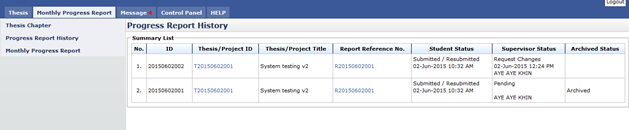
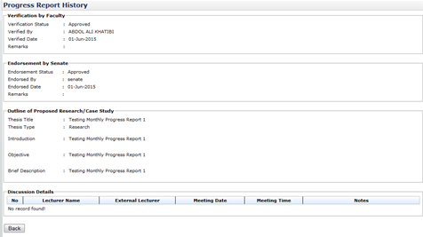

Figure 35: List of Progress Report History
Pre-condition
- After student submit progress report
Post-condition
- Can view progress report history
Steps:-
- Click on the Monthly Progress Report tab on the Top panel
- Click on the Progress Report History menu on the Left panel
- System will display all the list of progress report history
- To view thesis detail, click on the link at thesis/project id column(refer figure 1)
- To view progress report detail, click on the link at Report Reference No. column (refer figure 1)

Figure 36: Thesis Detail
Steps:-
- The system will display thesis detail only
- Click Back button to go to previous page.

Figure 37: Progress Report History Detail
Steps:-
- The system will display progress report detail only
- To view report by supervisor/co-supervisor, click
- Click Back button to go to previous page.
Created with the Personal Edition of HelpNDoc: Produce Kindle eBooks easily